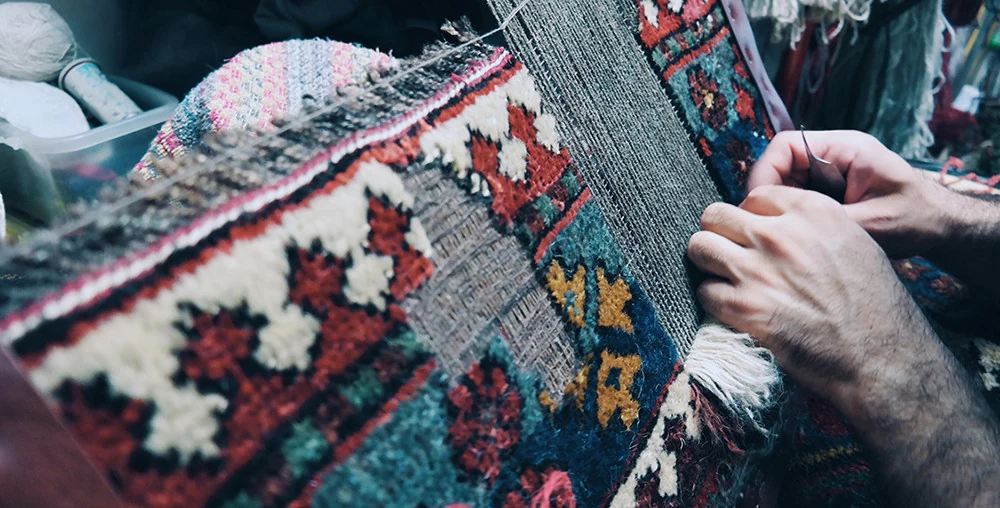
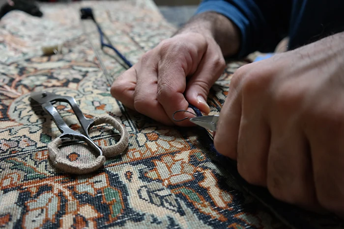
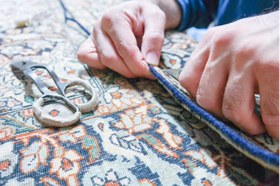

Richiesta
Invia fotografie del tappeto, immagini della zona danneggiata e misure.
Frange, bordi, trama e vello possono consumarsi in modi differenti. Prima di proporre un intervento, Irana Tappeti valuta la manifattura, i materiali, l’estensione del danno e le condizioni generali del tappeto.
Showroom a Cinisello Balsamo · Valutazioni nell’area di Milano

Un bordo aperto, una frangia consumata o una zona priva di vello non rappresentano lo stesso tipo di problema. Anche materiali, struttura, età, valore e precedenti interventi possono influenzare la soluzione più adatta.
Fotografie complete e immagini ravvicinate permettono una prima valutazione. Nei casi più complessi è necessario esaminare direttamente il tappeto.

La possibilità e l’opportunità di intervenire vengono valutate considerando condizioni, materiali, estensione del danno e valore complessivo del tappeto.
Invia fotografie del tappeto, immagini della zona danneggiata e misure.
Valutiamo manifattura, materiali, struttura, usure e interventi precedenti.
Indichiamo il tipo di intervento valutabile, il costo e i tempi stimati.
L’intervento viene eseguito in modo proporzionato alle caratteristiche e alle condizioni del tappeto.
Al termine concordiamo il ritiro in showroom o la riconsegna, quando disponibile.
Frange e bordi proteggono parti importanti della struttura. Quando iniziano ad aprirsi o a consumarsi, il danno può proseguire verso la parte annodata. Anche piccoli fori, tagli o zone indebolite meritano una valutazione.
Tecnica di annodatura, trama, ordito, materiali e colori determinano il modo in cui un intervento può essere valutato. I tappeti antichi, in seta o già restaurati richiedono particolare attenzione.

Il ritiro e la riconsegna possono essere organizzati in base alla zona, alle dimensioni del tappeto e al tipo di intervento. Modalità e costi vengono definiti durante la valutazione.
Risposte chiare sui fattori che influenzano la possibilità e l’estensione di un intervento.
Il costo dipende dal tipo di danno, dall’estensione, dai materiali e dalla lavorazione necessaria. Fotografie e misure consentono una prima valutazione.
Le frange possono essere consolidate, sistemate o ricostruite in modi differenti. La soluzione viene valutata in base alla struttura e alle condizioni del tappeto.
Sì, i bordi possono essere valutati per evitare che l’usura prosegua verso la parte annodata del tappeto.
La possibilità di intervenire dipende dalle dimensioni, dalla posizione, dalla struttura e dalle condizioni circostanti.
Non è corretto garantire un risultato identico all’originale. L’obiettivo dell’intervento viene definito dopo aver valutato il tappeto e il tipo di danno.
Sì. Invia una fotografia completa del tappeto, immagini ravvicinate della zona danneggiata e le misure.
Indica misure, posizione ed estensione del danno e ciò che hai osservato. Le fotografie complete e ravvicinate aiutano a raccogliere le prime informazioni.